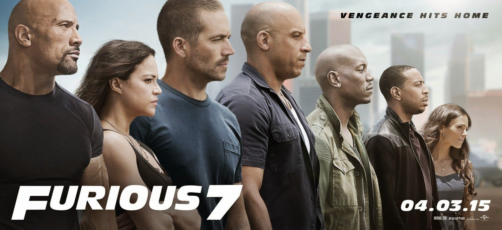
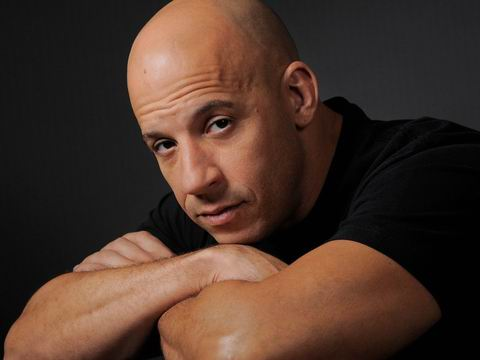
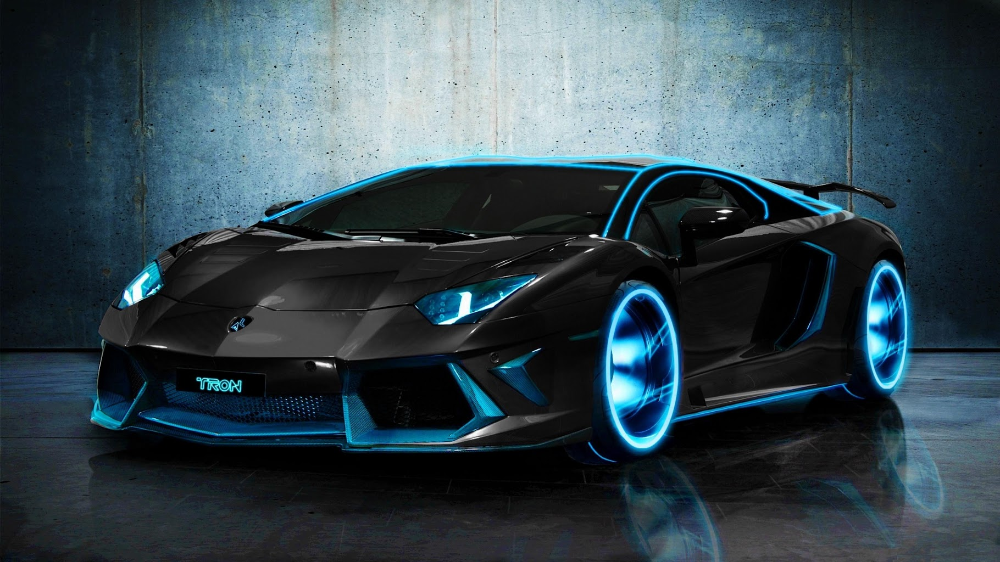
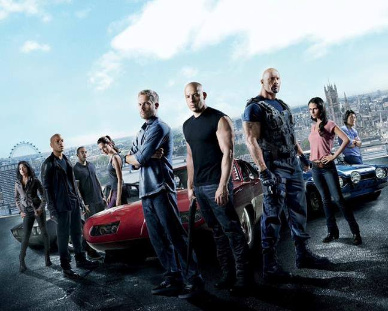

Introduce
Diesel further hinted at an eighth film on Jimmy Kimmel Live! when he stated that Kurt Russell's character had been introduced in a role that would span multiple films.He also stated that the film would take place in New York.
Take a look at our selections for the best sports cars of 2017 and 2018; if it's sporting an Editors' Choice badge, you'll know that we think it's one of the best sports cars on the market.
The Fast and the Furious is an American franchise based on a series of action films, the damage done onscreen through the stunts of the franchise would total more than $514 million across the first seven films.